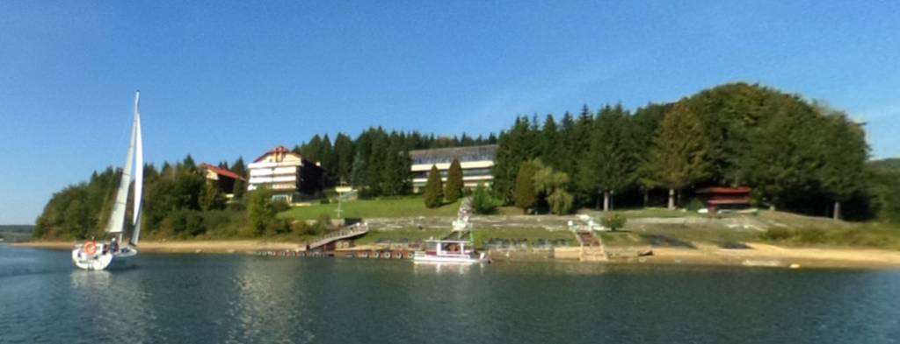

POLSKIE TOWARZYSTWO AKUSTYCZNE
OSA 2022.
LXVIII Otwarte Seminarium z Akustyki odbyło się w dniach 12–16 września 2022 roku w ośrodku wypoczynkowym „Rewita” w Solinie nad Jeziorem Solińskim.
Otwarte Seminarium z Akustyki to jedna z najważniejszych ogólnopolskich konferencji naukowych poświęconych akustyce. Wydarzenie gromadzi naukowców, badaczy oraz specjalistów zajmujących się różnymi dziedzinami akustyki, zarówno z Polski, jak i z zagranicy.
Miejsce konferencji

Organizatorzy konferencji
Głównym organizatorem LXVIII Otwartego Seminarium z Akustyki był Oddział Rzeszowski Polskiego Towarzystwa Akustycznego, we współpracy z Uniwersytetem Rzeszowskim oraz Komitetem Akustyki Polskiej Akademii Nauk.
Organizator:
Polskie Towarzystwo Akustyczne
– Oddział w Rzeszowie
Współorganizatorzy:
Uniwersytet Rzeszowski
Komitet Akustyki Polskiej Akademii Nauk
Miejsce:
Ośrodek wypoczynkowy „Rewita”,
Solina, Bieszczady
Tematyka naukowa
Program konferencji obejmował szerokie spektrum zagadnień związanych z akustyką. Uczestnicy prezentowali wyniki badań naukowych, nowe metody pomiarowe oraz rozwiązania techniczne wykorzystywane w różnych gałęziach nauki i przemysłu.
Wśród prezentowanych zagadnień znalazły się:
- Akustyka architektoniczna i budowlana
- Akustyka biomedyczna
- Akustyka fizyczna
- Akustyka mowy i słuchu
- Akustyka muzyczna
- Elektroakustyka
- Hydroakustyka
- Przetwarzanie sygnałów akustycznych
- Psychoakustyka
- Ultradźwięki
- Wibroakustyka
Program naukowy
Program OSA 2022 obejmował wykłady plenarne, referaty naukowe prezentowane w równoległych sekcjach tematycznych oraz sesje plakatowe. Językami konferencji były polski i angielski.
Wśród prelegentów wygłaszających referaty plenarne znaleźli się:
- prof. Andrzej Dobrucki – Nonlinear distortion in loudspeakers – causes, symptoms, measuring
- prof. Paweł Strumiłło – Auditory presentation of the environment for the visually impaired
- dr hab. inż. Krzysztof Szemela – Analytical solution for the Helmholtz equation in connected acoustic regions
- prof. Anna Preis – How to determine the annoyance due to wind turbines
- prof. Tadeusz Kamisiński – Acoustic reflective systems for concert halls – selected projects
- dr inż. Stanisław Wrona – Noise-Controlling Casings
Wydarzenia towarzyszące
W ramach konferencji odbył się Zjazd Delegatów Polskiego Towarzystwa Akustycznego. Podczas uroczystego otwarcia seminarium wręczono również wyróżnienia i medale Polskiego Towarzystwa Akustycznego, w tym dyplom Członka Honorowego PTA.
Ważnym elementem wydarzenia był także Konkurs im. Marka Kwieka, promujący osiągnięcia młodych naukowców zajmujących się akustyką i umożliwiający prezentację ich dorobku badawczego.
W dniu 13 września 2022 roku zorganizowano wystawę firm działających w obszarze akustyki, pomiarów oraz technologii ograniczania hałasu i drgań.
- WIBROIZOLACJA Sp. z o.o.
- OWO Polska Sp. z o.o.
- Amorim Cork Composites SA
- SVANTEK Sp. z o.o.
- World Acoustic Group S.A.
Publikacje naukowe
Prace zgłoszone na konferencję OSA 2022 podlegały ocenie Komitetu Naukowego. Po uzyskaniu pozytywnych recenzji rekomendowano je do publikacji w czasopismach naukowych oraz materiałach konferencyjnych.
Archives of Acoustics
Międzynarodowe czasopismo naukowe
poświęcone akustyce.
Vibrations in Physical Systems
Czasopismo naukowe prezentujące
badania dotyczące drgań i akustyki.
Postępy Akustyki 2022
Materiały konferencyjne LXVIII
Otwartego Seminarium z Akustyki.
Program integracyjny
Oprócz obrad naukowych organizatorzy przygotowali wydarzenia sprzyjające integracji środowiska akustyków. Uczestnicy mieli okazję do spotkań i wymiany doświadczeń podczas bankietu, spotkania przy grillu oraz wycieczki po okolicach Jeziora Solińskiego.
W programie wycieczki znalazł się przejazd koleją gondolową, zwiedzanie zapory w Solinie oraz rejs statkiem po Jeziorze Solińskim.
Konferencja zakończyła się 15 września 2022 roku uroczystą ceremonią zamknięcia, podczas której ogłoszono wyniki Konkursu im. Marka Kwieka. Wyjazd uczestników zaplanowano na 16 września.
Znaczenie konferencji
LXVIII Otwarte Seminarium z Akustyki stanowiło ważną okazję do wymiany doświadczeń pomiędzy przedstawicielami krajowych i zagranicznych ośrodków naukowych.
Spotkanie umożliwiło prezentację najnowszych osiągnięć badawczych, rozwijanie współpracy naukowej oraz integrację środowiska polskich akustyków.